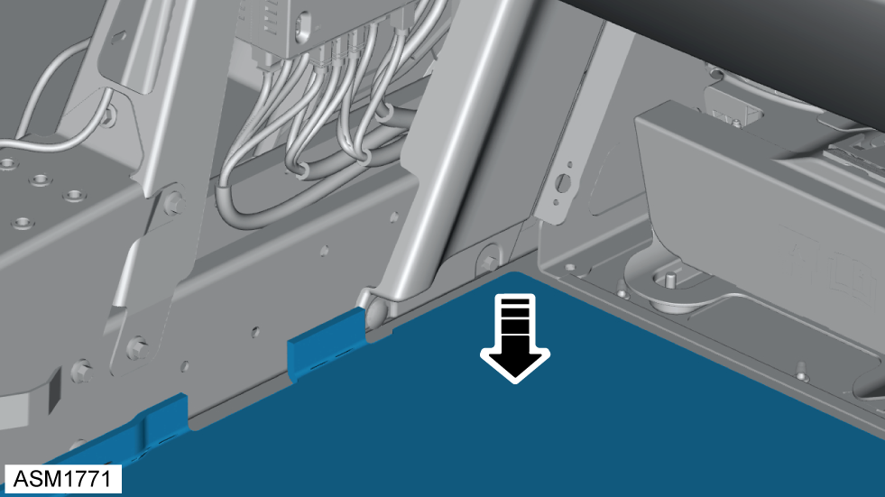
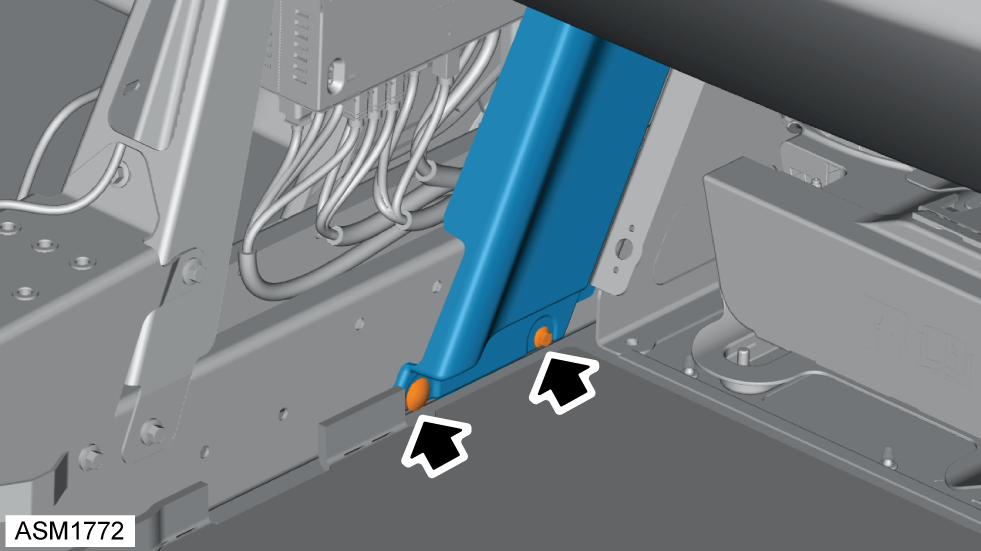
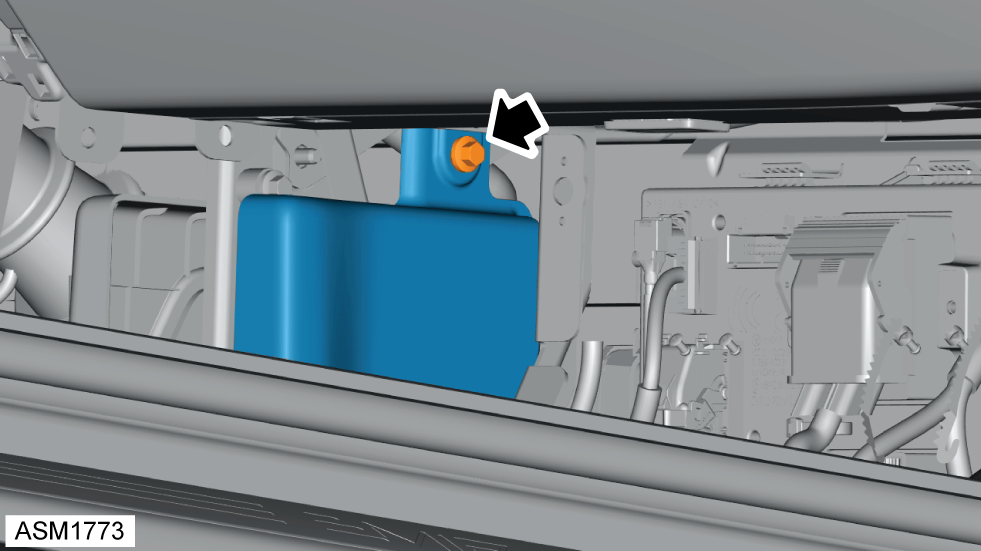
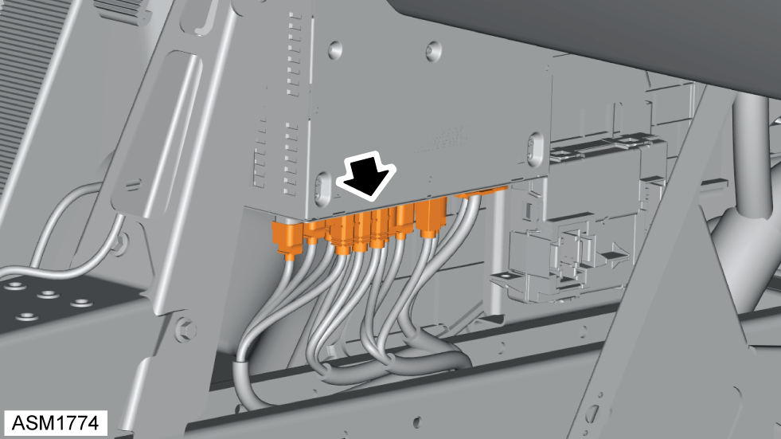
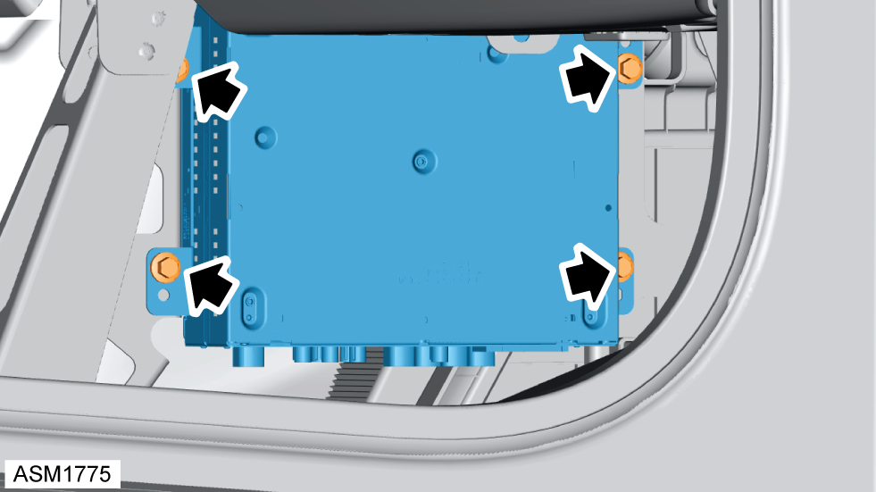

Module - Audio
Print
Operation Code: 17.27.45-02
Removal
- Remove centre console assembly. Refer to procedure.
- Remove passenger footrest. Refer to procedure.

- Pull back portion of carpet.

- Remove scrivet securing passenger footwell trim to vehicle.
- Remove M5x16 bolt securing passenger footwell trim to vehicle. Torque 6 Nm.

- Remove M6x16 bolt securing passenger footwell trim to vehicle. Torque 6 Nm.
- Remove passenger footwell trim.

- Disconnect harness connectors (x13) from audio module.

- Remove M6x16 bolts (x4) securing audio module to vehicle. Torque 6 Nm.
- Remove audio module.
Installation
- Installation is the reverse of removal procedure except for the following:
- After installation perform a diagnostic read and clear error memory using Lotus Insight tool.